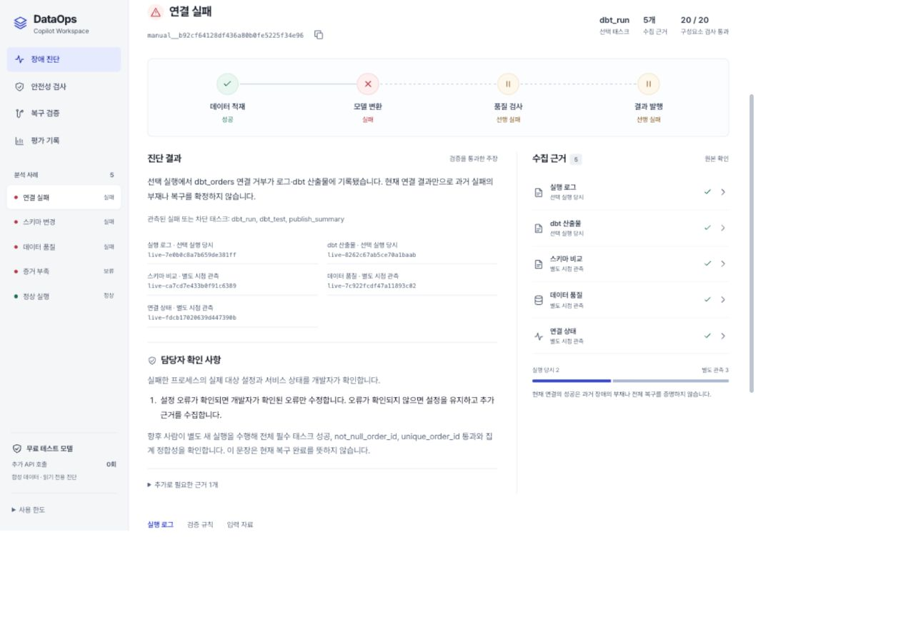

DataOps
Evidence Copilot
장애 진단의 주장과 근거를
코드로 검증합니다
SKALA AI Agent 프로젝트
임준혁 · 2026.10.22

로그 수집 → 구조화 주장 → 규칙 검사 → 담당자 확인
설명보다 먼저 확인할 것
“연결이 안 됐습니다”만으로는 수정할 설정을 정할 수 없습니다.
실행 당시
dbt_run: FAILED connection refused
로그는 선택한 실행의 연결 거부를 보여줍니다.
이후 관측
check_connection status: success
현재 연결 성공만으로 과거 실패의 부재·전체 복구를 증명할 수 없습니다.
어느 실행인가 · 어느 대상인가 · 언제 관측했는가
근거가 묶인 주장만 출력하는 구조
또는 저장 근거 재생
구조화된 주장 생성
코드 규칙 검사
부족하면 UNKNOWN
- 확장 구성
- E5·Qdrant + BM25·RRF 검색, Reviewer 반례 추가
- 역할·기술 분리
- 도구·모델·검색기 주입, JSON 추적, FastMCP stdio 통신
- LangGraph
- 초기 StateGraph 경로에 구현 · 현재 기본 웹은 순차 실행
기본 1개 모델 단계 · 확장 2개 모델 단계 · 무료 시연은 API 호출 0회
진단과 원본 근거를 한 화면에서
- 데이터 적재성공
- 모델 변환실패
- 품질 검사선행 실패
- 결과 발행선행 실패
연결 실패
실행 로그·dbt 산출물에서
선택 실행의 연결 거부를 확인합니다.
설정 오류가 확인되면 해당 오류만 수정.
확인되지 않으면 설정 유지·추가 근거 수집.
근거의 관측 범위
실행 로그 · dbt 산출물실행 당시
스키마 · 품질 · 연결 상태별도 시점 관측
근거 ID를 누르면 원본과 실행 ID 확인
다른 실행을 넣으면 UNKNOWN · 조치 없음
Reviewer의 거절도 검증합니다
주입한 반례
실제 검사 결과
의도적으로 만든 반례를 실제 코드에 넣은 저장 결과입니다. 실제 모델의 새 응답이 아닙니다.
Reviewer의 반례를 실제 코드 위반과 대조해 판정합니다
복구에는 별도의 새 실행이 필요합니다
담당자 수정 이후
- 별도 새 실행 · 수정 이후 시각
- 전체 태스크 · 필수 품질 검사
- 원본 → 중간 → 최종 집계 일치
| 단계 | 행 수 | 합계 |
|---|---|---|
| 원본 | 100,000 | 50,025,858.92 |
| 중간 | 100,000 | 50,025,858.92 |
| 최종 | 100,000 | 50,025,858.92 |
실제 로컬 서비스·합성 데이터의 저장 기록 재검사. 이 화면에서 수리·서비스 재실행은 하지 않습니다.
작은 비교에서 기본 구성을 선택했습니다
같은 모델 · 같은 합성 사례 10건 · 진단·조치 기준
진단·조치 통과
기본 1단계8 / 10
검색 + Reviewer 2단계8 / 10
10건의 추정 API 비용
평균 응답 시간: 기본 4.014초 / 확장 11.05초
과거 실제 Luna 모델 호출 기록. 토큰·당시 단가로 계산한 추정 비용이며 청구서가 아닙니다.
구성 선택과 평가에 같은 10건을 사용했습니다. 운영 정확도·RAG 단독 효과를 뜻하지 않습니다.
발표 중 무료 시연·캐러셀 열람에 실제 모델 API 호출은 없습니다
테스트 규모와 신뢰 범위를 구분했습니다
| 검증 층위 | 확인 결과 | 이 결과로 말할 수 있는 것 |
|---|---|---|
| 코드·통합 | 212개 통과 | 계약·MCP 통신·근거 연결·HTTP 경계 |
| 무료 반례 | 10,000개 통과 | 10개 의미 유형의 변형에 대한 코드 검사 |
| 실제 로컬 서비스 | 10만 행 · 7회 실행 | 합성 데이터 · FakeLLM · 새 실행 복구 3건 |
| 실제 모델 | 고정 합성 사례 10건 | 작은 편의 표본 · 독립 최종 평가 아님 |
v3.1 추가 2건: 보류·성공 ID 기준 2/2, 전체 구성요소 기준 1/2.
앞선 10건과 합쳐 성능을 높여 표시하지 않습니다.
자동 검사 수가 많아도, 현업 정확도가 검증됐다고 말할 수는 없습니다
어디까지 말할 수 있는지를
추적 가능하게 만들었습니다
구현하며 얻은 점
모델 단계 수보다 검증 가능한 주장
현재 성공보다 새 실행의 복구 근거
확정이 어려울 때는 안전한 판단 보류
다음에 채울 검증
새 독립 평가 자료·실제 담당자 검토
승인된 업무 의미·정정 계약
LangSmith·독립 LLM Judge
현재 외부 LangSmith·독립 Judge·사람 평가는 미실시